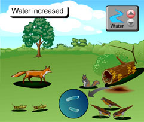
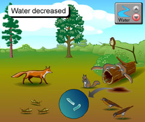

Now that you have made predictions about the effects of increased and decreased water in the Pennsylvania ecosystem, you can compare your predictions to the probable results. When you have finished studying these results below, scroll down to answer the question.
|  |
 |
INCREASED WATER: Continual and intense precipitation this summer
- Very few trees can tolerate large amounts of water, and they succumb to disease in their root systems. This decreases the amount of food available to grasshoppers and squirrels. Robins and sparrows would decrease in population.
- The fox population would decrease due to the lack of prey.
- Bacteria and fungi would flourish on the dead oak leaf and tree trunk litter in shadier conditions.
|
DECREASED WATER: Brutal drought - like conditions this summer
- Pines and oaks are more tolerant of drought conditions.
- Grasshopper populations decrease slightly, with less available seedlings, causing a slight decrease in robins.
- Sparrows lose both grasshoppers and seeds as sources of food.
- Foxes have fewer small birds as prey.
- Squirrels survive well on pines and oaks alone.
- Bacteria will form dormant spores and population will decrease. Fungi will dry out leaving behind airborne spores.
|
1. Which organisms had the most dramatic increase or decrease? Explain for each condition.
Return to page 1 to study another abiotic factor, or, if you have studied all three abiotic factors, answer the final activity questions on page 1.